class: center, middle # Deep Learning for Natural Language Processing - Part 2 Guillaume Ligner - Côme Arvis --- # Reminders on words embeddings: Skip Gram .left-column40[ 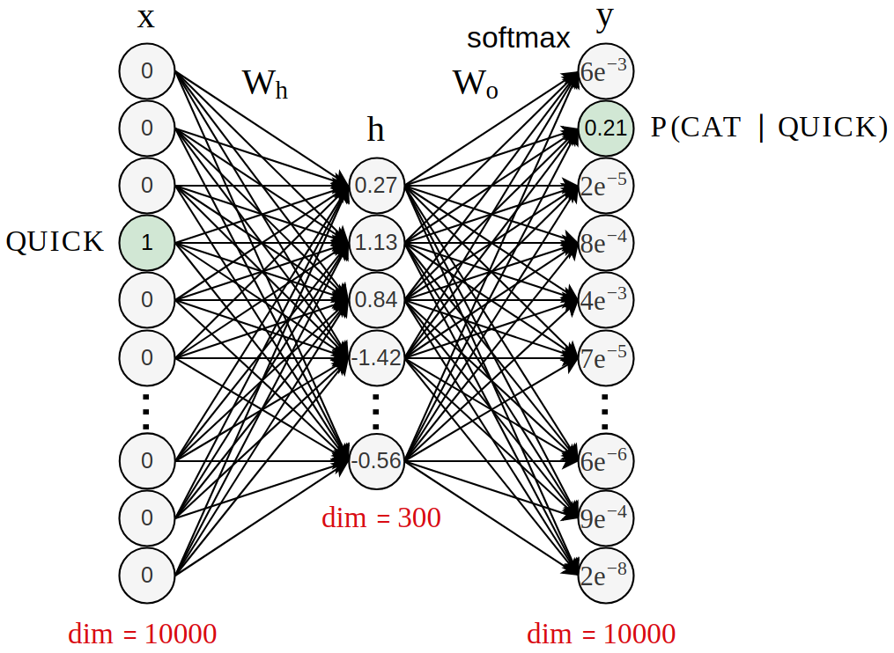 ] </br></br></br> .right-column60[ - Let's say we have a vocabulary with 10000 words and 300 dimensional embeddings ] -- .right-column60[ - Here we have:</br>$p(w_c | w_i) = softmax(W_o W_h X_i)_c$</br> With $w_i$ being out input word in the vocabulary, e.g. $“QUICK”$, and $w_c$ being our context word, e.g. $“CAT”$ ] --- # Skip Gram: improvements ### First problem: common words - There are some issues with **common words** like "the", "and", "are", ... - Such words are very often in the context window:</br>it means that the algorithm will train a big part of our vocabulary to be close to these "common words" - In other terms, they are trained to be near everyone during the optimization process --- # Skip Gram: improvements ### First solution: subsampling - To tackle that, one solution proposed is to do **subsampling** -- - Before doing the actual training, for each word we encounter in our training text, there is a probability that we will delete it from the whole corpus - The probability that we remove the word is related to the **word frequency** - We randomly remove words that are more frequent than some threshold $t \approx 10^{-5}$ with a probability of $p_{drop}(w)$: $p_{drop}(w) = 1 - \sqrt{\frac{t}{f_w}}$, with $f_w$ the word’s corpus frequency --- # Skip Gram: improvements ### Second problem: intractable softmax $$ p(w_c | w_i) = softmax(W_o W_h X_i)_c = \frac{(e^{W_o W_h X_i})_c}{\sum \limits_j^{|V|} (e^{W_o W_h X_i})_j} $$ .center[ with $W_h \in \mathbb{R}^{|E| \times |V|}$ and $W_o \in \mathbb{R}^{|V| \times |E|}$ ] - It means that we have to sum over all the vocabulary for a single update - In other terms, we train our network to output 0 for $|V| - 1$ neurons at each step - If $|V|$ is around $10000$, the softmax computation turns out to be really costly --- # Skip Gram: improvements ### Second solution: negative sampling - Negative sampling allows each training batch to only modify a small percentage of the weights $W_o$, rather than all of them - At each step, we randomly select $K_{negative}$ words to update the weights for: if the choice is random, it is very likely that the chosen word has no semantic similarity with the context -- - In our previous example, we will just be updating the weights for our positive word $“CAT”$, plus the weights for $K_{negative}$ other words for which we want to output probabilities close to $0$ - $(K_{negative} + 1)$ neurons instead of $|V|$ - If we choose $K_{negative} = 10$, it leads us to update only $300 \times 11 = 3300$ weight values instead of $3M$ [//]: # (il y aussi les poids de W^h à updater, les plus importants d'ailleurs vu que ce sont les embeddings in fine) [//]: # (sans doute reformuler cette partie pour que ce ne soit pas confusant à ce niveau) --- # Beyond Word2vec ### FastText: down to n-grams .small90[ - Basically an extension of word2vec skip gram, in which we treat each word as composed of character n-grams ] -- .small90[ - For instance, the word $“FASTER”$ is made of the sum of this character n-grams: ] .left-column50.small80[ | | .center.big140[n-grams] | | ------------- | ------------- | | .big140[3-grams] | $<$fa fas ast ste ter er$>$ | | .big140[4-grams] | $<$fas fast aste ster ter$>$ | | .big140[5-grams] | $<$fast faste aster ster$>$ | | .big140[6-grams] | $<$faste faster aster$>$ | | .big140[7-grams] | $<$faster faster$>$ | | .big140[8-grams] | $<$faster$>$ | ] .right-column50.small80[ - Begin and end of a word are specified with the $<$ and $>$ characters - Each n-grams has its own embedding - The bounds of the n-grams are hyperparameters, in this example we used $minn=3$ and $maxn=8$ - Final vector is a combination of the full-word vector and the average of all the n-gram vectors ] --- # Beyond Word2vec ### FastText: down to n-grams - N-grams can hint across many similar words: - meaningful subword, like $“fast”$ in the previous example - prefixes and suffixes, like $“er$>$”$ in the previous example - common word-roots - Meaningless n-grams aren't too noisy, because there's no pattern to where they appear elsewhere [//]: # (j'ai pas compris cette phrase, faudra m'expliquer ensuite) -- - Generate better word embeddings for rare words, because their character n-grams are still shared with other words - Can handle out of vocabulary words, which is useful when we are working on common crawl that contains various typing errors --- # Beyond Word2vec ### Sentences embeddings - A naive way to have fixed-length sentence vectors is to simply take the weighted average of the word vectors inside it - We take a weighted sum because frequently occurring stop words such as "and" or "the" does not provide much information about the sentence - A strategy could be to set the weights as being inversely related to the frequency of word occurrence in the corpus - Is there a way to create more global embeddings by finding a task directly linked to sentences? [//]: # (bulletpoint1:pas compris, si on prend l'average on se retrouve systématiquement avec un sentence vecteur de same dim que les word vecteur. C'est ce que tu veux dire ?) --- # Beyond Word2vec ### Sentences embeddings: Doc2vec .center[ 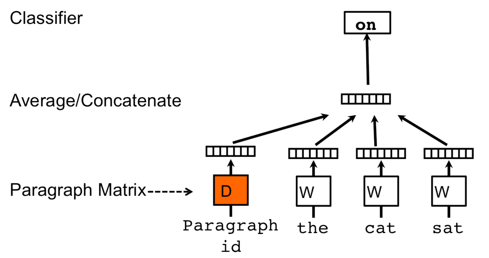 ] - Doc2vec is another algorithm that aims to produce distributed representation of entire sentences or documents - Similar to the Word2vec CBOW algorithm with one more feature vector that will characterize the sentence itself --- # Beyond Word2vec ### Sentences embeddings: Doc2vec .center[ ] .small80[ - The idea is to add a **Paragraph id** vector, which is sentence-unique, and will hold a numeric representation of the whole sentence after training - It acts as a memory that remembers what is missing from the current context, or as the topic of the paragraph - To go further, we would like to take the sequence of words in the sentence into account, which will be made possible with **Seq2seq** models ] --- # Encoder-Decoder: Seq2seq ### Reminder: Recurrent Neural Networks .center[ 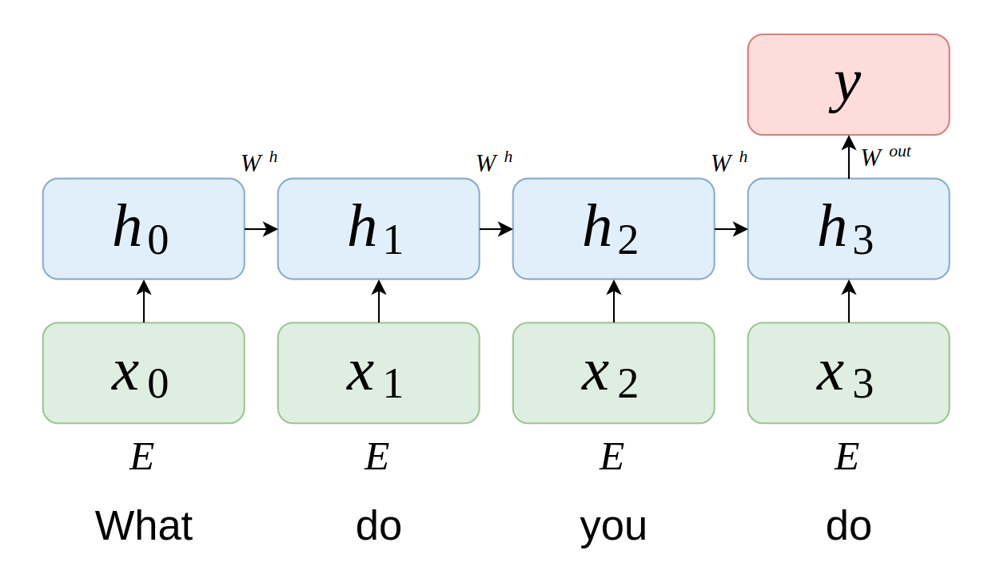 ] .small80[ - Take a variable-length sequence as input - In their standard form, output a single value, or a value for each time-step of the input - Problem: how to output a sequence which is not necessarily of the same length? ] --- # Encoder-Decoder: Seq2seq .left-column50[ 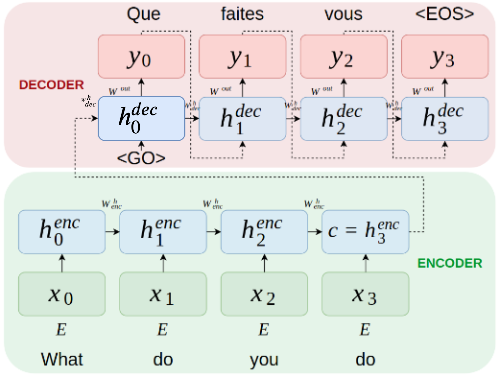 ] .right-column40[ - Two symetrics recurrent blocs: one **encoder** and one **decoder** - Both can have an **arbitrary number of time-steps**, meaning that we can map a sequence of size $|S_A|$ to another of size $|S_B|$ - All the information of the sequence $S_A$ is summarized in a fixed-size context variable $c$ ] --- # Encoder-Decoder: Seq2seq .left-column50[ ] .right-column40[ - The token $<$GO$>$ is the input to the first time step of the decoder to let the decoder know when to **start generating output** - Besides, the token</br>$<$EOS$>$ allows us to tell the decoder where a **sentence ends**, and it allows it to indicate the same thing in its outputs as well ] --- # Encoder-Decoder: Seq2seq ### Teacher forcing - At a fixed time-step $t$ in the decoder, if we omit the biases, we have: .center[ $h\_t^{dec} = g(\mathbf{W}\_{dec}^h h\_{t-1}^{dec} + \hat{y}\_{t-1})$</br> $\hat{y}\_t = \text{softmax}( \mathbf{W}^{out} h\_{t}^{dec})$ ] - It means that $\hat{y}\_t$ directly depends on the previous output $\hat{y}\_{t-1}$ - If the first $\hat{y}\_0$ generated was inaccurate, then the decoder is already off track and is going to get punished for every subsequent word it generates -- - The improve the stability and the convergence rate of the decoder during training, we can choose to do what we call **teacher forcing** and replace $\hat{y}\_t$ with the true token $y\_t$ as input in the decoder: .center[ $h\_t^{dec} = g(\mathbf{W}\_{dec}^h h\_{t-1}^{dec} + y\_{t-1})$ ] --- # Encoder-Decoder: Seq2seq ### Translation tasks - Natural application in **translation** tasks: encode a sentence of size $|S_A|$ from a language $L_1$ to a context variable $c$, which will contain all the semantic information needed, then decode it to sentence of size $|S_B|$ of another language $L_2$ - We usually use **LSTM** or **GRU** blocs as recurrent layer</br> -- - Problem: multiple translations to $L_2$ can be equally valid from a sentence of $L_1$ - Example: .small70[ - $L_1$ = $french$ - $S_A$ = "Le chat est sur le tapis" - $L_2$ = $english$ - $S_B$ = "The cat is on the mat" - $S_C$ = "There is a cat on the mat" ] --- # Encoder-Decoder: Seq2seq ### BLEU score .small90[ The BLEU score is a measure of n-grams frequence similarity ]</br> .center[ 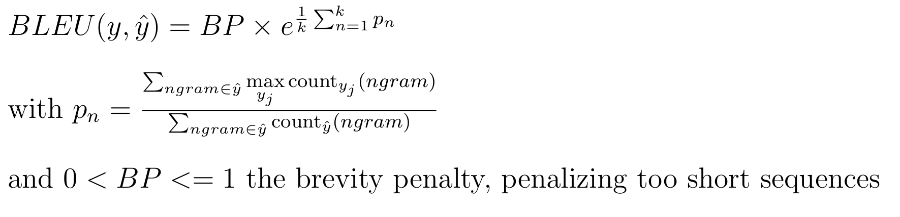 ] [//]: # (Equation display doesn't work here with remark.js...) [//]: # ($BLEU(y, \hat{y}) = BP \times e^{\frac{1}{k} \sum_{n=1}^k p_n}$ \\) [//]: # (with $p_{n} = \frac{) [//]: # (\sum_{ngram \in \hat{y}} \underset{y_j}{\operatorname{max}} \operatorname{count}_{y_j}(ngram)) [//]: # (}{) [//]: # (\sum_{ngram \in \hat{y}} \operatorname{count}_{\hat{y}}(ngram)) [//]: # (}$ \\) [//]: # (and $0 < BP <= 1$ the brevity penalty, penalizing too short sequences) Example for bi-grams: .small70[ - $model(S_A) = model($"Le chat est sur le tapis"$)$ $=$ "The cat the cat on the mat" - $S_B$ = "The cat is on the mat" - $S_C$ = "There is a cat on the mat" ] .left-column70[ .small70[ | bi-grams | "the cat" | "cat the" | "cat on" | "on the" | "the mat" | | ------------- | ------------- | ------------- | ------------- | ------------- | ------------- | | .big140[$count_{\hat{y}}$] | 2 | 1 | 1 | 1 | 1 | | .big140[$\operatorname{max} count_{y_j}$] | 1 | 0 | 1 | 1 | 1 | ] ] .right-column30[ .small90[ </br></br> Here $p_2(y, \hat{y}) = \frac{4}{6}$ ] ] --- # Encoder-Decoder: Seq2seq ### Other tasks - Seq2seq models are general enough to be applied besides translation tasks: - Dialogue systems - Question answering - Text summarization - $\cdots$ -- - Could we imagine a **self-supervised** task sufficiently **agnostic** that would generate **sentence embeddings**? - Like Word2vec, we could train a model to output **sentences as context** given an input sentence, using the logical structure of a corpus itself - That is what **Skip-Thought** do --- # Encoder-Decoder: Seq2seq ### Sentence embeddings: Skip-Thought .center[ 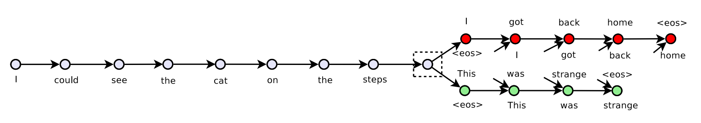 ] "I got back home. I could see the cat on the steps. This was strange." - Here two decoders are used, and we need a **triplet of contiguous sentences** at each iteration: $(s\_{i-1}, s\_{i}, s\_{i+1})$ - The encoder outputs a hidden representation of $s\_{i}$, we call it $h\_{i}$ - The decoders try to predict respectively the **previous** sentence $s\_{i-1}$ and the **next** sentence $s\_{i+1}$ given $h\_{i}$ --- # Encoder-Decoder: Seq2seq ### Sentence embeddings: Skip-Thought .center[ ] - Again, it reveals to be a self-supervised task that doesn't require labels and can therefore benefit from a large volume of data - After training, the hidden representations $h\_{i}$ contain **contextualized representations** of the sentences $h\_{i}$, in which the **order of words** has been taken into account - Those embeddings can thus be used on several **downstream NLP tasks** such as semantic similarity, sentiment classification, and so on --- # Encoder-Decoder: Seq2seq ### t-SNE visualization .center[ 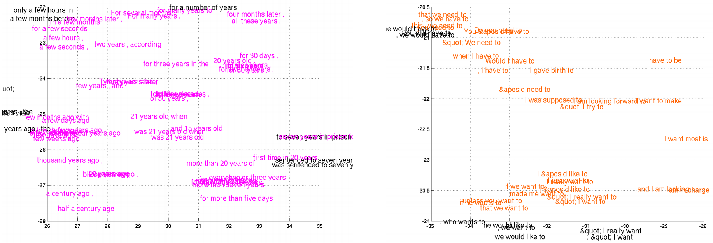 ] .center[ The semantic proximity of the sentences makes more sense than if we had taken the average of the embeddings word vectors ] --- # Seq2seq: the problem of long sequences .center[ <img src="images/bleu_length_sequences.png" style="width: 600px;" /> ] .small70[ - Using a classical encoder-decoder Seq2seq model, we observe that the **longer sequences** are, the **lower BLEU scores** we get - However, an architecture improvement seems to perform better on long sequences - RNNsearch is an **architecture with attention** and the number afterwards indicates how long the training examples were ] --- # Attention Mechanism ### Intuition behind - Biological analogy: humans usually **focus** on specific parts of their visual inputs to compute the adequate responses - Some words in a text at a given instant - A part of their visual field - $\cdots$ - We actually need to select the **most pertinent** piece of information, rather than using all available information</br> -- - It turns out that an attention model allows, for each new word, to focus on a part of the original text - The decoder will not be fed with a global context vector $c$ anymore, but with a **weighted combinaison** of **every hidden state** $h_i$ of the encoder --- # Attention Mechanism .left-column70[ <img src="images/rnn_attention_1.png" style="width: 600px;margin-left: -12%;" /> ] .right-column30[ $ \begin{equation} \hspace{1em} \mathbf{s}_i = sim(\mathbf{h}_i^{enc}, \mathbf{0})\\\\ \hspace{1em} \mathbf{\alpha} = \frac{e^\mathbf{s}}{\sum_i e^{\mathbf{s}_i}}\\\\ \hspace{1em} \mathbf{z}_0 = \sum_i \mathbf{\alpha}_i \mathbf{h}_i^{enc} \end{equation} $ </br></br> .small80[ - The $sim$ function may be simply a **cosine similarity** - $\mathbf{s}$ will contain the similarities between the **previous decoder hidden state** and **every encoder hidden states** ] ] --- # Attention Mechanism .left-column70[ 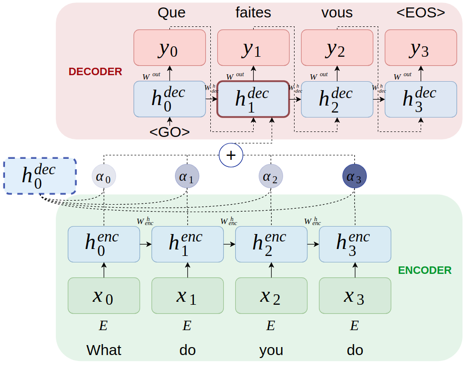 ] .right-column30[ $ \begin{equation} \hspace{1em} \mathbf{s}_i = sim(\mathbf{h}_i^{enc}, \mathbf{h}_0^{dec})\\\\ \hspace{1em} \mathbf{\alpha} = \frac{e^\mathbf{s}}{\sum_i e^{\mathbf{s}_i}}\\\\ \hspace{1em} \mathbf{z}_1 = \sum_i \mathbf{\alpha}_i \mathbf{h}_i^{enc} \end{equation} $ </br></br> .small80[ - Then we compute $\mathbf{\alpha}$ as the output of $softmax(\mathbf{s})$ to have a vector of **weights** that sums to $1$ - Finally we compute $\mathbf{z}_i$ as a **weighted average** of the encoder hidden states ] ] --- # Attention Mechanism .left-column70[ 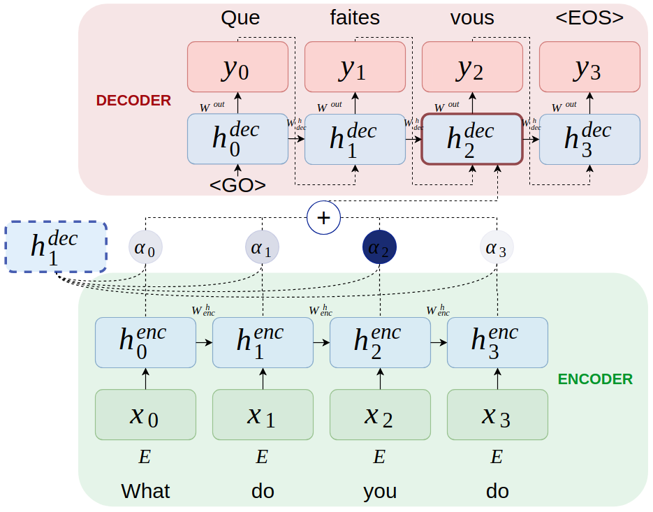 ] .right-column30[ $ \begin{equation} \hspace{1em} \mathbf{s}_i = sim(\mathbf{h}_i^{enc}, \mathbf{h}_1^{dec})\\\\ \hspace{1em} \mathbf{\alpha} = \frac{e^\mathbf{s}}{\sum_i e^{\mathbf{s}_i}}\\\\ \hspace{1em} \mathbf{z}_2 = \sum_i \mathbf{\alpha}_i \mathbf{h}_i^{enc} \end{equation} $ </br></br> .small80[ - $\mathbf{z}\_i$ will be concatenated with $\mathbf{h}\_{i-1}^{dec}$ to form the decoder hidden state - A high $\mathbf{\alpha}_i$ means that the network **pays attention** to the initial word $w_i$ ] ] --- # Attention Mechanism .left-column70[ 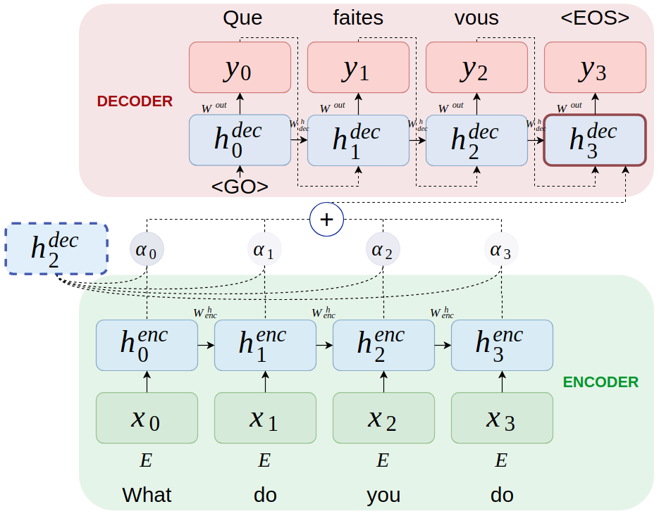 ] .right-column30[ $ \begin{equation} \hspace{1em} \mathbf{s}_i = sim(\mathbf{h}_i^{enc}, \mathbf{h}_2^{dec})\\\\ \hspace{1em} \mathbf{\alpha} = \frac{e^\mathbf{s}}{\sum_i e^{\mathbf{s}_i}}\\\\ \hspace{1em} \mathbf{z}_3 = \sum_i \mathbf{\alpha}_i \mathbf{h}_i^{enc} \end{equation} $ </br></br> .small80[ - Same as the standard Seq2seq model, a token $<$EOS$>$ indicates the decoder where a sentence ends ] ] --- # Attention Mechanism ### Connexions visualization .center[ 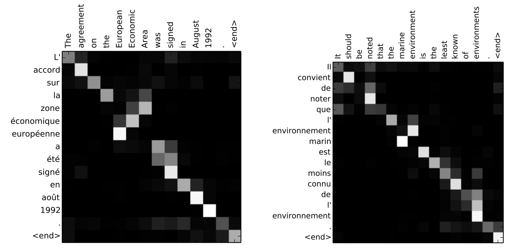 ] --- # Attention Mechanism - The attention mechanism architecture allows the model to create **semantical connexions** between tokens from a vocabulary to another - Thus, such model could is more easily **interpretable** as we can have a better understanding of which inputs gave which outputs - It also helps a translation model to have a better and more stable BLEU score on **longer sentences**, which opens the way to the translation of **whole paragraphs** --- # Attention Mechanism: the GNMT architecture .center[ <img src="images/gnmt.png" style="width: 750px;margin-left: -5%;margin-top: -3%;" /> ] .small80[ - Google Neural Machine Translation model - Basically a multilayer Seq2seq with attention - Include **bidirectional** LSTM: recurrent propagations are done in both ways ] --- # CNN for NLP ### CNN directly applied to NLP **How ?** - Instead of image pixels, input is a sentence or document represented as a matrix - Each row is a token, word or character - An embedding (word2vec, GloVe etc.) or one-hot encoded vector - Case input is sentence $ = 10$ words, each word a $100$ dimensional embedding - $(10,100)$ shaped matrix - That's the "image" equivalent for CNN --- # CNN for NLP ### CNN directly applied to NLP **How ?** - In vision, our kernels slide over local $2d$ regions of an image - In NLP a subset of a row doesn't encode information - The global vector position in space encodes information - In NLP kernel vertically slides over full rows of the matrix - Sliding over words - Thus, “width” of our kernel is usually the same as the width of the input matrix - Word embedding dimensionality - Kernel height typically $2$ to $5$ - Sliding window over $2-5$ words at a time --- # CNN for NLP ### CNN directly applied to NLP **Cons** - Local invariance through pooling makes sense for many vision tasks - Not so much for NLP, we usually care about word position - Pixels close to each other likely to be connected to same concept - Not so true for NLP, words expressing an idea can be separated by many words --- # CNN for NLP ### CNN directly applied to NLP **Pros** - Natural fit for tasks like Sentiment Analysis, Topic Categorization etc. - Suits tasks for which the order of words is less important - The occurrence of some words or $n-$grams matters - Conv' and pooling lose info about local order of words - Compared to RNNs, CNNs are very fast - Convolutions are well implemented and paralleled on GPUs - With a large vocabulary, very hard to represent more than $3-$grams - Google itself doesn't provide anymore than $5$ Word$-$Grams representations - Using kernels, one can easily cover-up regions larger than $5$ --- # CNN for NLP CNN architecture example for NLP classification .left-column70[ <img src="images/archi_cnn_input.png" style="width: 750px;margin-top: 3%;margin-left: -13%" /> ] .left-column30.small70[ - Input is the sentence "Kernels slide over the sentence matrix" - Input represented as a stack of word vectors - Input is a $(6,5)$ matrix ] --- # CNN for NLP CNN architecture example for NLP classification .left-column70[ 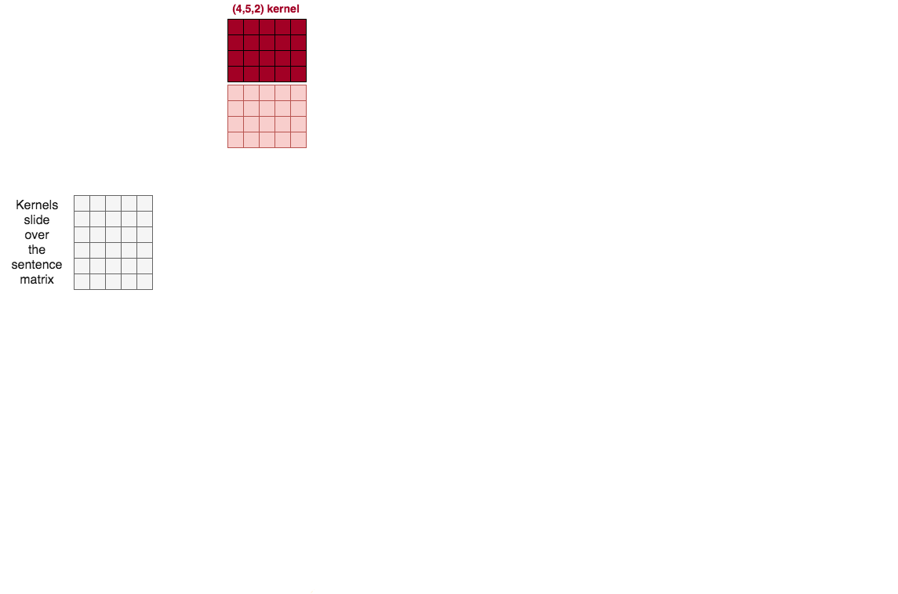 ] .left-column30.small70[ - $1^{st}$ set of $2$ kernels - Each kernel shape is $(4,5)$ - Global kernel is $(4,5,2)$ - Each kernel $(4,5)$ extracts semantic concept from $4$ words regions ] --- # CNN for NLP CNN architecture example for NLP classification .left-column70[ 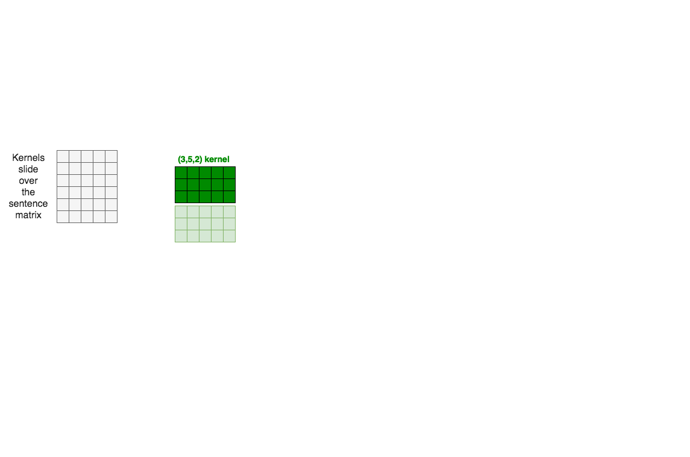 ] .left-column30.small70[ - $2^{nd}$ set of $2$ kernels - Each kernel shape is $(3,5)$ - Global kernel is $(3,5,2)$ - Each kernel $(3,5)$ extracts semantic concept from $3$ words regions ] --- # CNN for NLP CNN architecture example for NLP classification .left-column70[ 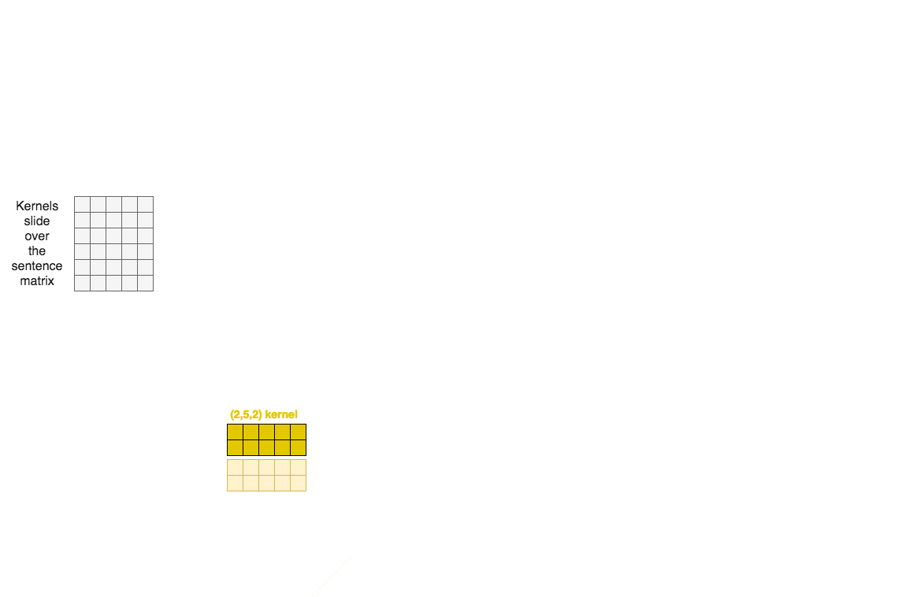 ] .left-column30.small70[ - $3^{rd}$ set of $2$ kernels - Each kernel shape is $(2,5)$ - Global kernel is $(2,5,2)$ - Each kernel $(2,5)$ extracts semantic concept from $2$ words regions ] --- # CNN for NLP CNN architecture example for NLP classification .left-column70[ 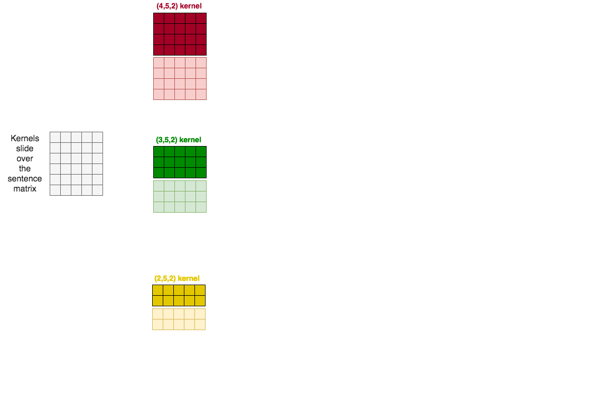 ] --- # CNN for NLP CNN architecture example for NLP classification .left-column70[ 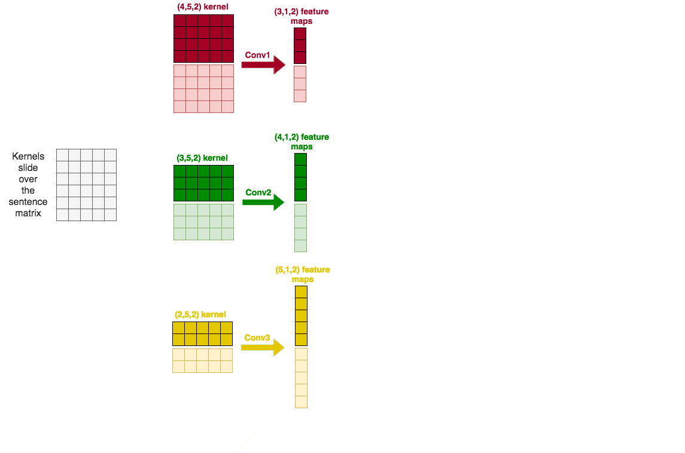 ] .left-column30.small70[ - $3$ sets of convolution operations in parallel - $2$ feature maps per conv' - $6$ feature maps overall - $6$ semantic concepts extracted from sentence ] --- # CNN for NLP CNN architecture example for NLP classification .left-column70[ 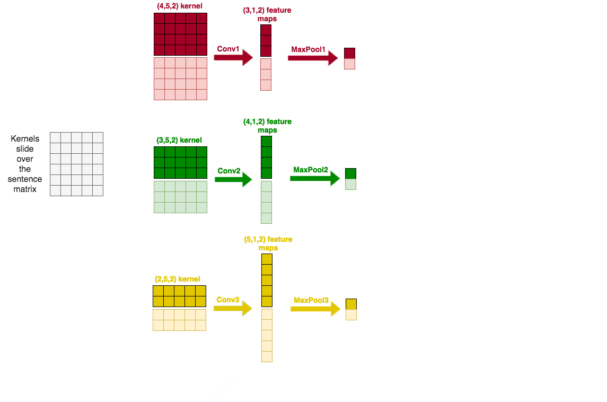 ] .left-column30.small70[ - MaxPooling over each feature map - Assumes invariance of $y$ to localisation of concept - Highest similarity to each concept in sentence kept - $6$ conv' activations kept ] --- # CNN for NLP CNN architecture example for NLP classification .left-column70[ 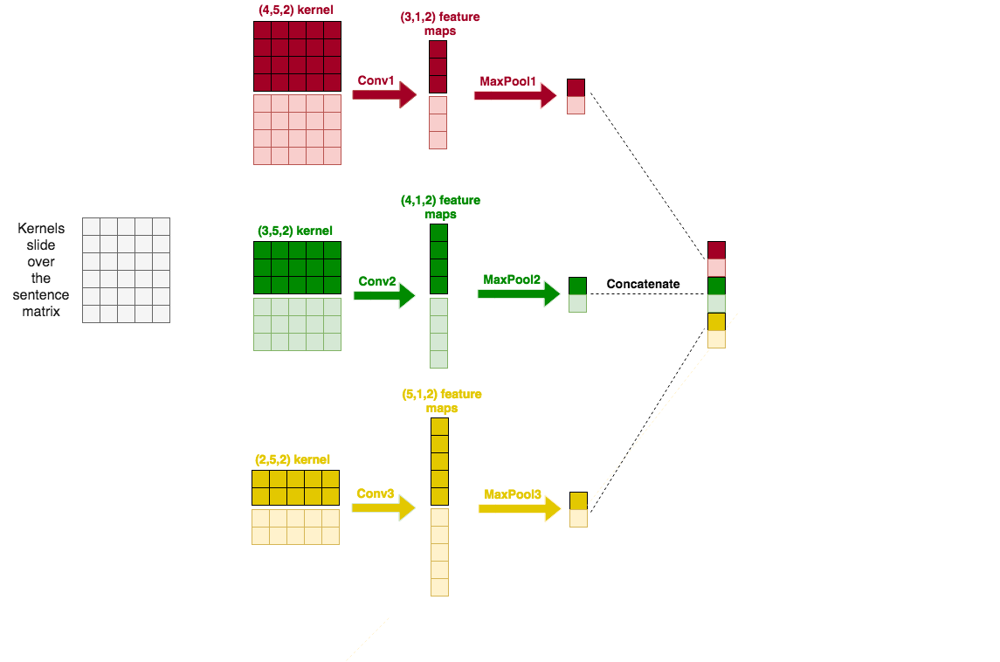 ] .left-column30.small70[ - Concatenate the $6$ activations as a $(6,1)$ vector of features $x$ - Feature value at index $i$ in vector can be interpreted as the presence in sentence, with similarity $x_i$, of the $i^{th}$ semantic concept represented by the $i^{th}$ kernel ] --- # CNN for NLP CNN architecture example for NLP classification .left-column70[ 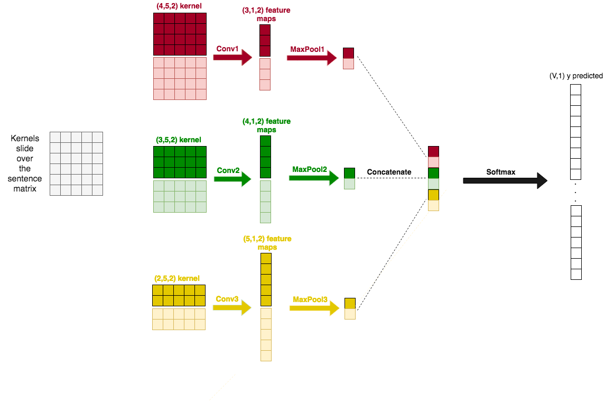 ] .left-column30.small70[ - Use the vector of features - Compute softmax $P(y_i|input) \in [0,1]^V$ ] --- # CNN as encoder for NLP ### CNN followed by RNN .center[ <img src="images/image_captioning.gif" style="width: 500px;" /> ] --- # CNN as encoder for NLP ### CNN followed by RNN .center[ 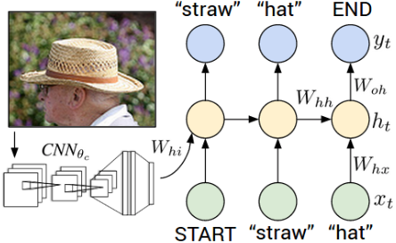 ] .left-column50.small80[ **Encoder** - The CNN can be thought of as an encoder - CNN has image as input and extracts the features - CNN's last state connected to the Decoder ] .right-column50.small80[ **Decoder** - The decoder is a RNN which does language modelling up to the word level - Decoder at first time step receives the encoded image from encoder and the START vector ] --- # CNN as encoder for NLP ### CNN followed by RNN .center[ ] .left-column50.small80[ **Training** - Step$1$: $x_1$ = START vector and $y_1 = 1^{st}$ word - Step$2$: $x_2 = $ embedding of $1^{st}$ word and $y_2 = 2^{nd}$ word - Step$T$: $x_T = $ embedding of last word and <br/>$y_T = $ END token vector - Correct input given to decoder at every step ] .right-column50.small80[ **Testing** - Steps performed same way as in training - Predicted $y\_i$: argmax or sample from distribution $P(y\_i|x\_{i-1}, x\_{i-2},..., x\_{1})$ - Predicted $y\_{i}$ mapped to its embedding and becomes input $x\_{i+1}$ for next timestep - Iterate over steps until END token generated ] --- # CNN as encoder for NLP ### The best of both worlds: automatic image captioning with attention mechanism .center[ 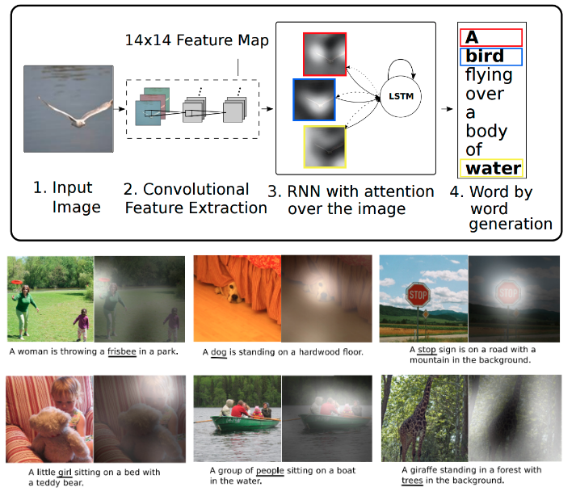 ] --- # The Transformer .left-column35[ 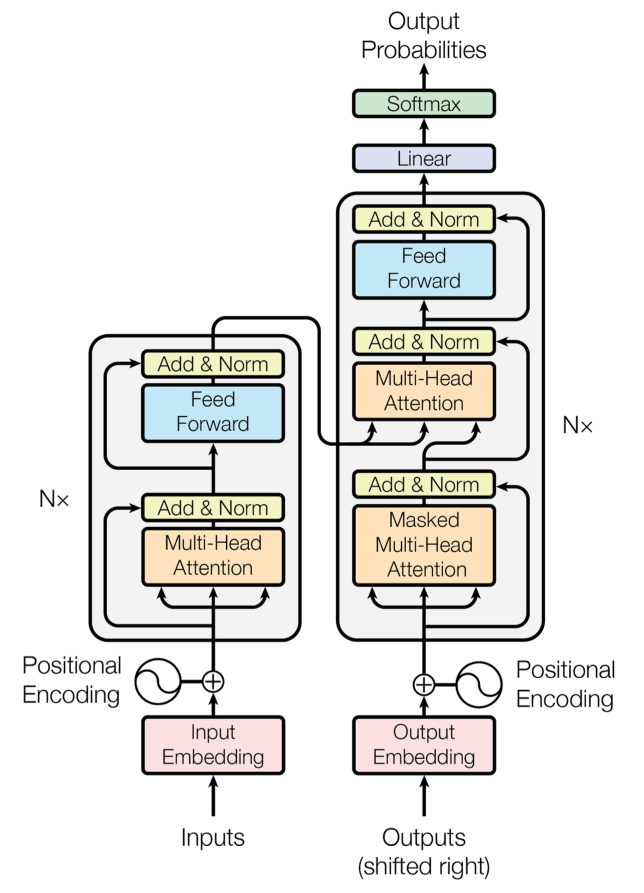 ] .right-column65[ - Introduced in **Attention Is All You Need** paper (2017) - Key concepts: - Still an **encoder-decoder** architecture - **No recurrent cells** at all (use a positional encoding instead), thus can be heavily parallelized - Use **self-attention mechanism** in addition to standard attention mechanism - Long-range dependencies are easier to learn - Building block for state of the art NLP pretrained models in 2019, like BERT or GPT-2 ] --- # The Transformer: applications .center[ 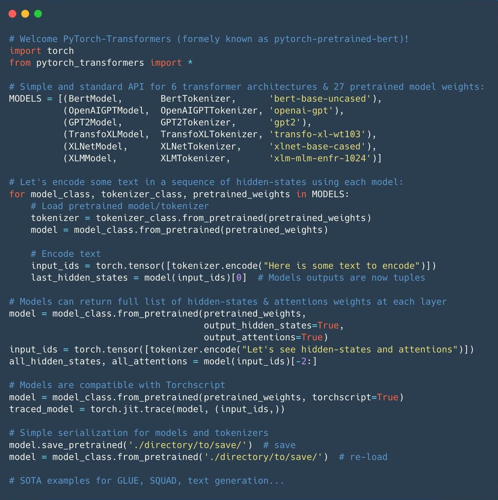<br/><br/> <small>Source from the french startup HuggingFace: https://huggingface.co/transformers</small> ]